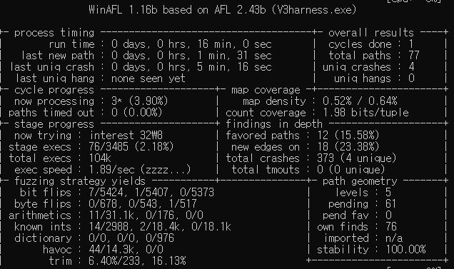
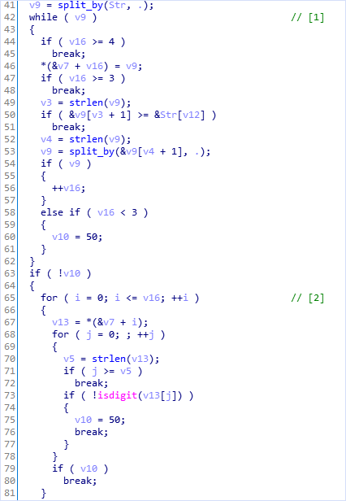
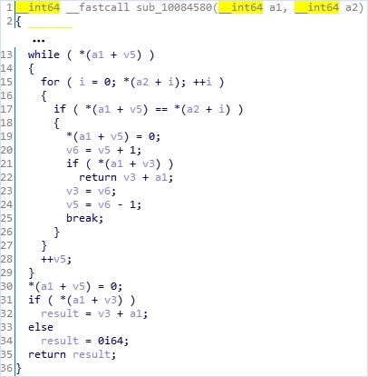
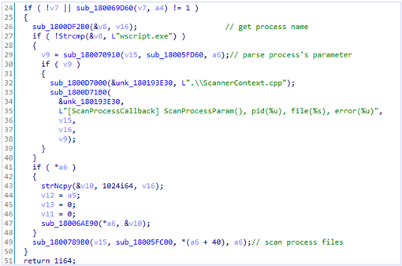
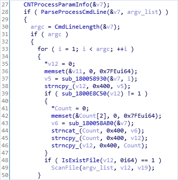
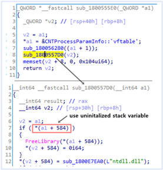

Fuzzing vs Manual analysis.
I’ve found several vulnerabilities in V3 Lite of Ahnlab recently. Through these bugs, I will compare the pros and cons of fuzzing and manual analysis. Because these bugs are a real-world vulnerability, I won’t explain too many details.
Case: Coverage-guided fuzzing
The bug found by coverage-guided fuzzer(winafl) is triggered due to a URL parsing function called when v3 lite determines if it is a malicious URL. To fuzz this function, I wrote a short harness that loads a target dll and runs a function for URL parsing but it needs a little reverse engineering. Here is the source code of the harness.
v3_harness.cpp
#include <stdio.h>
#include <tchar.h>
#include <Windows.h>
#include <winsock.h>
#pragma comment(lib, "Ws2_32.lib")
extern "C" __declspec(dllexport) int fuzz_med(__int64* hMeD, char* url);
struct Med {
__int64 v11;
char buf[0x3000];
};
typedef __int64 (*MEDINITIALIZEEX) (int* a1);
typedef __int64* (*MEDCREATEHANDLE) ();
typedef __int64 (*MEDSCANURL)
(void* Dst, const char* a2, const char* a3, int a4, char* buf);
typedef __int64* (*MEDDESTORYHANDLE) (__int64*);
typedef __int64* (*MEDFINALIZE) (int a1);
MEDINITIALIZEEX MeDInitializeEx_func;
MEDCREATEHANDLE MeDCreateHandle_func;
MEDSCANURL MeDScanUrl_func;
MEDDESTORYHANDLE MeDDestroyHandle_func;
MEDFINALIZE MeDFinalize_func;
bool load_dll_and_functions() {
HMODULE medcore_dll = LoadLibraryA("medcore.dll");
if (!medcore_dll) {
printf("Error loading mecore.dll \n");
return false;
}
MeDInitializeEx_func = (MEDINITIALIZEEX)GetProcAddress(medcore_dll,
"MeDInitializeEx");
MeDCreateHandle_func = (MEDCREATEHANDLE)GetProcAddress(medcore_dll,
"MeDCreateHandle");
MeDScanUrl_func = (MEDSCANURL)GetProcAddress(medcore_dll,
"MeDScanUrl");
MeDDestroyHandle_func = (MEDDESTORYHANDLE)GetProcAddress(medcore_dll,
"MeDDestroyHandle");
MeDFinalize_func = (MEDFINALIZE)GetProcAddress(medcore_dll,
"MeDFinalize");
return true;
}
int fuzz_med(__int64* hMeD, char* file) {
FILE* fp;
fopen_s(&fp, file, "rb");
if (!fp)
return 0;
fseek(fp, 0, SEEK_END);
long urlLength = ftell(fp);
rewind(fp);
char buf[0x1000] = { 0, 0, };
char* url = new char[urlLength + 1];
if (url) {
fread(url, 1, urlLength, fp);
url[urlLength] = '\x00';
MeDScanUrl_func((void*)hMeD, url, url, 0, buf);
free(url);
}
if (fp)
fclose(fp);
return 0;
}
int main(int argc, char* argv[]) {
if (!load_dll_and_functions())
return 0;
Med med;
med.v11 = 0x20D0;
memset(med.buf, 0, 0x3000);
int ret = MeDInitializeEx_func((int*)&med);
if (ret) {
printf("MeDInitializeEx failed \n");
return 0;
}
__int64* hMeD = MeDCreateHandle_func();
if (hMeD) {
hMeD[1] |= 0x40000;
fuzz_med(hMeD, argv[1]);
MeDDestroyHandle_func(hMeD);
}
MeDFinalize_func(0);
return 0;
}
After the target dll and function initialization, it calls a function of target dll. The function which is fuzzed by winafl is MeDCoreUrl. To call this function, We need to set up some structure and handle, which needs reverse engineering.

As you can see, it’s able to find a unique crash soon. When i analyzed medcored.dll manually, I couldn’t spot this crash. Now let me tell you why i didn’t find this bug.


The above code is a pseudocode of “IDA hexray” where the crash triggers. ‘Str’ is the URL delivered by the fuzzer. Let’s see the stack variable ‘v7’. It’s initialized in the [1] loop and it used in the [2] loop. However, if the URL consists of a spot like ‘………', the split_by function returns 0. Then the [1] loop is skipped but the [2] loop is not. Because of the [2] loop’s condition(i <= v16), uninitailized stack variable vulnerability occurs.
Conclusion
Can you spot this bug through manual reverse engineering? It’s not impossible, but it’s very difficult and easy to miss. This fact is the advantage of fuzzing. The fuzzing tool automatically measures code coverage and records various code path. That’s why it can spot the bug that we missed.
Case: Manual analysis
I came across the second bug while I was analyzing the V3 Lite manually. It exists in a very unique code branch of ‘ScanProcess’ function that scans for malicious processes.

The ‘v8’ of the above pseudocode is the process name to scan. If the name is “wscript.exe”, it calls ScanProcesssParam (#29). Window Script Host(wscript.exe) provides an environment in which users can execute scripts in a variety of languages. So V3 Lite parses and scans the command line of wscript.exe to determine if it is executing a malicious script.

CNTProcessParamInfo function initializes ‘v7’ class variable for command line parsing (#27). The vulnerability occurs in v7 initialization routine.

If (a1 + 584) has a handle value, it is released by function “FreeLibrary”. However, it has never been initialized before so an uninitailized stack variable vulnerability occurs. This vulnerability allows an attacker to unload any dll modules. And I’ve successfully built the exploit that terminates V3 Lite process (Denial of Service). What’s interesting is that just entering the code branch of wscript.exe, the vulnerability is triggered. But fuzzing tools like a winafl (used in Closed-Source), hard to enter this code branch. In addition, it is very difficult to build a fuzzer for running processes.
Conclusion
There are vulnerabilities that a fuzzer couldn’t spot. And they are easily discovered in some cases.